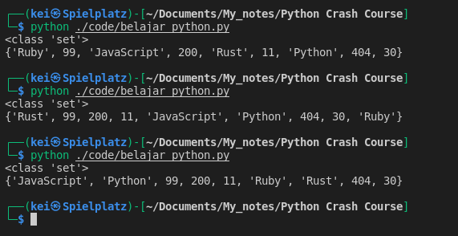
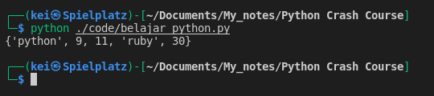
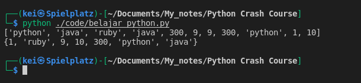
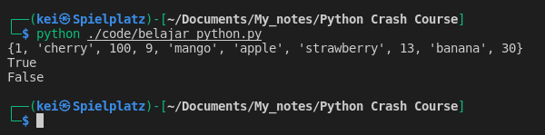
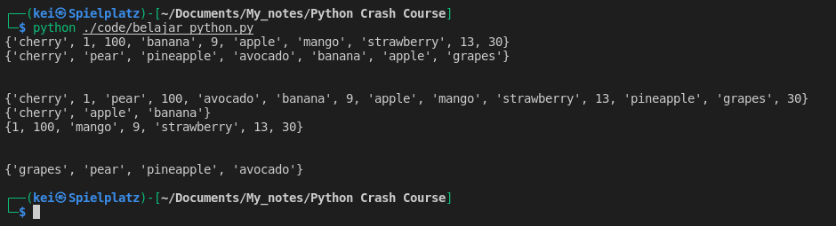
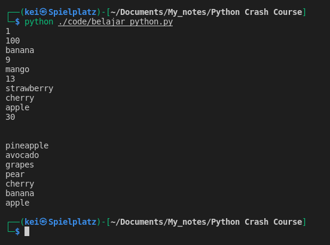

- Sets using curly braces { }
- Example of a Set :
mixed_set = {11, 200, 404, 30, "Python", "JavaScript", 99, "Ruby", "Rust"} - Sets are unordered collection of elements, meaning that everytime I run the code the order of the items/elements will be print out randomly
mixed_set = {11, 200, 404, 30, "Python", "JavaScript", 99, "Ruby", "Rust"}
print(type(mixed_set))
print(mixed_set)

- Sets don’t allow for duplicate elements
duplicates = {11, 11, "python", "ruby", 30, 9, 30, "python"}
print(duplicates)

- If I have a List with some duplicates items I can cast it to a Set to remove them
duplicate_list = ["python", "java", "ruby", "java", 300, 9, 9, 300, "python", 1, 10]
print(duplicate_list)
new_set = set(duplicate_list)
print(new_set)

-
Set is optimized for mainly to find information in them and for mathematical operations
-
Example to find information in a Set
new_mixed_set = {1, 30, "strawberry", "apple", 13, "cherry", 9, "mango", 100, "banana"}
print(new_mixed_set)
print("mango" in new_mixed_set)
print("blackberry" in new_mixed_set)

- Example of math operations on Sets using union, intersection, and difference methods
- Union method will return all the elements that are in either Sets
- Intersection method will return the elements that are in both Sets
- Difference method will return the differences of the Sets, all elements that are in this set but not the others
new_mixed_set = {1, 30, "strawberry", "apple", 13, "cherry", 9, "mango", 100, "banana"}
fruits_set = {"pineapple", "apple", "banana", "pear", "grapes", "cherry", "avocado"}
print(new_mixed_set)
print(fruits_set)
print("\n")
print(new_mixed_set.union(fruits_set))
print(new_mixed_set.intersection(fruits_set))
print(new_mixed_set.difference(fruits_set))
print("\n")
print(fruits_set.difference(new_mixed_set))

- To iterate through a Set I can use For loop
new_mixed_set = {1, 30, "strawberry", "apple", 13, "cherry", 9, "mango", 100, "banana"}
fruits_set = {"pineapple", "apple", "banana", "pear", "grapes", "cherry", "avocado"}
for element in new_mixed_set:
print(element)
print("\n")
for item in fruits_set:
print(item)
